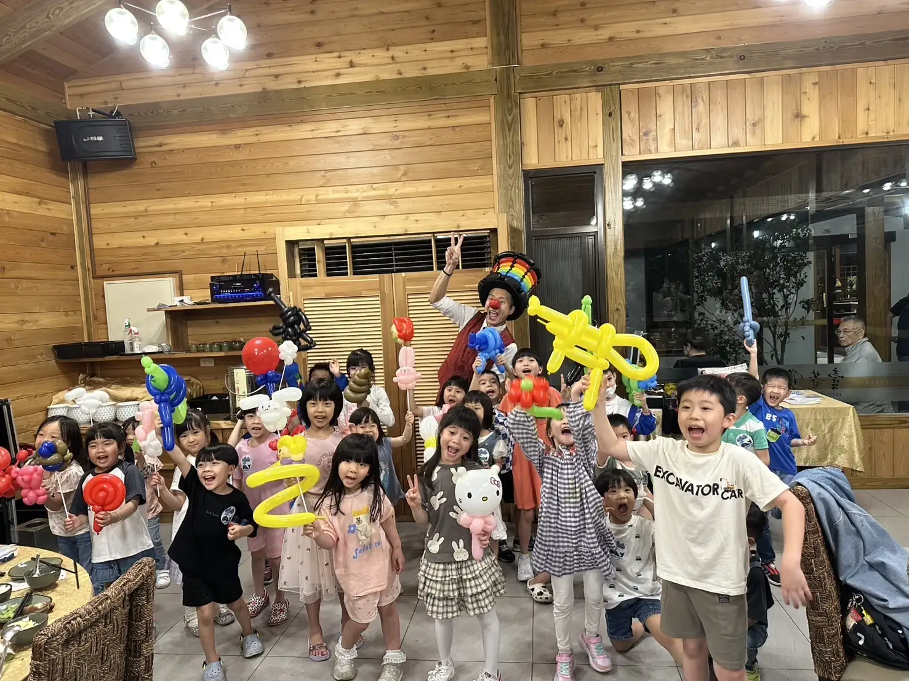
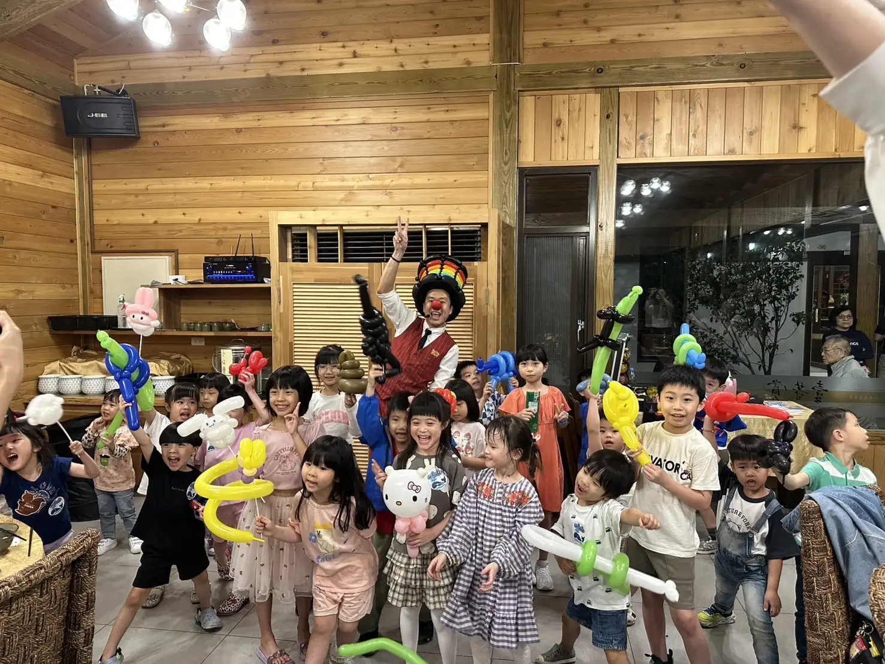
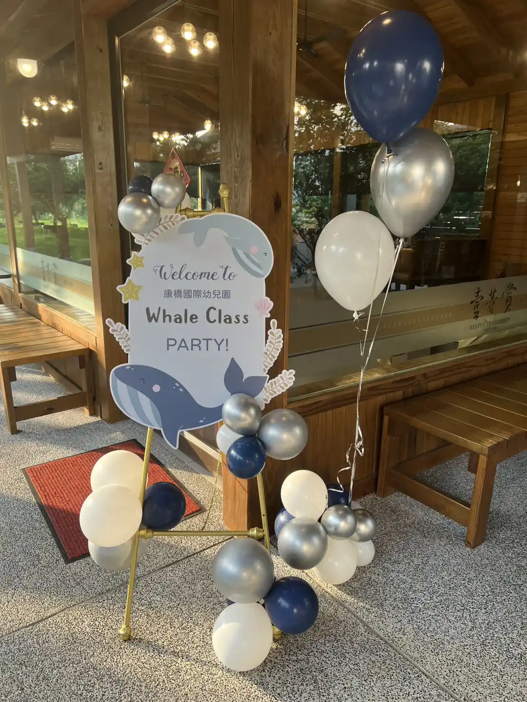

康橋幼兒園 × 龍潭壹等賞氣球餐敘活動｜演出紀錄
專業教育品牌餐敘秀｜氣球魔術秀 × 定點手折 × 主題佈置一站式規劃
📍 地點：桃園市龍潭區 壹等賞觀景茶園
優質校園品牌的快樂催化劑
康橋國際幼兒園為增進家庭間的交流與情感，特別於桃園龍潭知名的壹等賞景觀餐廳舉辦親子餐敘活動。氣球大叔 Sony 獲邀擔任現場主秀，透過專業的魔術氣球演出與精心佈置，為校園活動注入更活潑且溫馨的品牌儀式感。

多元互動服務：從入口到餐桌的驚喜
Sony 在本場活動中展現了全方位的執行力，將現場氣氛從進場就開始點亮：
- 🎈 魔術主秀： 融合幽默對話與氣球奇蹟，小朋友紛紛上台主動助演。
- 🎁 定點手折： 滿足每位小嘉賓的「客製點餐」，讓繽紛角色氣球遍佈餐會。
- 🏰 主題佈置： 入口區設置與校方視覺一致的主題氣球拱門，強化打卡儀式感。

迎賓佈置 × 強化品牌形象
入口接待區由 Sony 協助規劃，結合班級主題立牌與造型氣球鏈，營造出熱鬧歡愉的入場動線，讓家長與孩子踏入會場的第一秒便感受到校方的用心規劃。

「這場餐敘因為 Sony 老師的表演變得超精彩！不只孩子開心，家長們也感受到滿滿的溫度與質感。」— 桃園康橋幼兒園參與家長回饋回饋
結語：幼兒園活動的全方位亮點專家
氣球大叔 Sony 不僅提供氣球表演，更具備專業的校園專案執行力。無論是畢業慶典、校慶活動、聖誕派對或校外餐敘，都能為校方量身打造符合教育宗旨與歡笑氛圍的演出。服務範圍覆蓋桃園、台北、新北、新竹及台中等各大知名校區。
🔥 更多桃園在地與教育相關推薦案例：
- 👉 教育宣導案例：基隆幼兒園 SDGs 永續教育｜魔術教學 × 親子互動紀錄
- 👉 桃園大型市集：桃園綠色生活悠遊節｜蜜蜂氣球魔術秀亮點回顧
- 👉 高端企業活動：2025 巴斯夫 BASF 親子日｜新竹綠世界草地互動演出